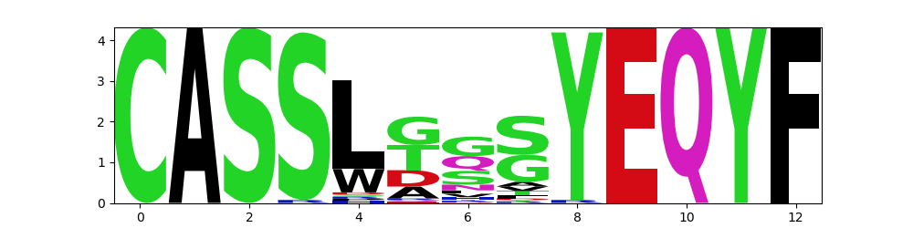
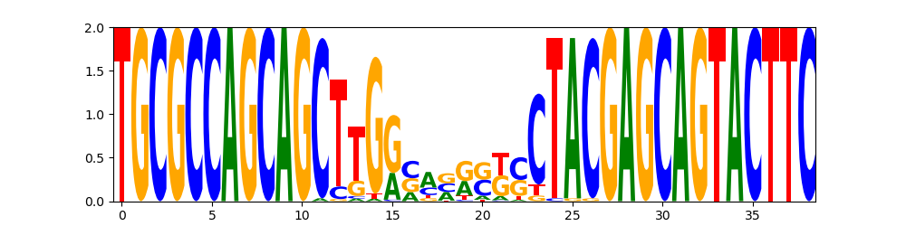

Usage: clustering
Clustering finds clusters in given clonosets.
How to create clusters
create_clusters function args:
cl_filter: see the previous page and Filter for further explanations.mismatches: specifies the maximum number of mismatches allowed for clonotypes to qualify as neighbours (adjacent).overlap_type: Possible overlap types are [aa,aaV,aaVJ,nt,ntV,ntVJ],aa/ntstands for an amino acid or nucleotide sequence, andV/J/VJdenote a segment type.- If
igh=True, the constant (C) segment is kept. - If
tcrdist_radiusis not None, only edges between clones with a tsrdist metric less than or equal to the specified radius are built. It overridesoverlap_typeandmismatches. A TCRdist modification is introduced: no gaps are allowed in CDR3, weights are in 3:1 ratio for CDR3 compared to other regions. Also, V-segment distances are pre-calculated and currently are available only for Homo sapiens. - If
by_freq=True (default), clonotype frequencies are used instead of counts.
from repseq import clustering
clusters = clustering.create_clusters(clonosets_df, cl_filter=top_filter, mismatches=1, overlap_type="aaV", igh=False, tcrdist_radius=None, count_by_freq=True)
Output is a list of NetworkX Graph() objects — separate clusters and single nodes. The list is sorted by cluster size.
clusters[:3]
[<networkx.classes.graph.Graph at 0x7fa133b1bd00>,
<networkx.classes.graph.Graph at 0x7fa15200cb80>,
<networkx.classes.graph.Graph at 0x7fa154aa3c10>]
Clusters from a pooled DataFrame
Alternatively, one can create clusters from a dataframe with clonotypes. Mandatory columns are [freq, count, v, j, cdr3aa, cdr3nt, sample_id].
pooled_df example:
| count | freq | cdr3nt | cdr3aa | v | d | j | c | VEnd | DStart | DEnd | JStart | sample_id | |
|---|---|---|---|---|---|---|---|---|---|---|---|---|---|
| 0 | 117 | 7.46674e-05 | TGTGCCAGCAGTCGCCACAGTTACAGGGATGGCTACACCTTC | CASSRHSYRDGYTF | TRBV12-3 | TRBD1 | TRBJ1-2 | TRBC1 | 11 | 22 | 27 | 28 | sample1_nCD4_1_TRB |
| 1 | 109 | 6.95619e-05 | TGTGCCAGCAGTTTAGCGCATCAGGGAGGCAGCTATGGCTACACCTTC | CASSLAHQGGSYGYTF | TRBV12-4 | TRBD2 | TRBJ1-2 | TRBC1 | 18 | 23 | 28 | 32 | sample1_nCD4_1_TRB |
| 2 | 105 | 6.70092e-05 | TGTGCCAGCAGCCCGGGACTGGCCTACAATGAGCAGTTCTTC | CASSPGLAYNEQFF | TRBV12-3 | TRBD2 | TRBJ2-1 | TRBC2 | 10 | 11 | 19 | 22 | sample1_nCD4_1_TRB |
create_clusters_from_pooled_df(pooled_df, mismatches=1, overlap_type="aaV", igh=False, tcrdist_radius=None,
count_by_freq=True, _run_from_create_clusters=False)
Adding metadata to clusters
Metadata, if present, could also be added to node properties prior to saving to Cytoscape. The info will be added to node.additional_properties dictionary. Note that the metadata should contain the same sample_ids that were used in the clonosets_df when creating the clusters.
Metadata example:
| sample_id | group | type | |
|---|---|---|---|
| 0 | sample1_nCD4_1_TRB | 1 | nCD4 |
| 1 | sample1_nCD8_1_TRB | 1 | nCD8 |
| 3 | sample2_nCD4_1_TRB | 2 | nCD4 |
| 4 | sample2_nCD8_1_TRB | 2 | nCD8 |
Save clusters in Cytoscape format
Here, we filter out single-node clusters. Clusters are exported in two forms: edges are saved in a .sif file and cluster properties are in a tab-separated .csv file. In the case of TCRdist, the edges are also assigned a length (radius).
clusters_output_prefix = os.path.join(output_dir, "clusters")
# here, one-node clusters are filtered out
clusters_filtered = clustering.filter_one_node_clusters(clusters)
clustering.save_clusters_for_cytoscape(clusters_filtered, clusters_output_prefix, sample_metadata=metadata)
Cluster properties
node size
If weighed is set to True, the weight of a node is determined by its size. The size of the node is defined by the by_freq parameter in the create_clusters function, which indicates whether the size is calculated based on counts or frequencies.
Cluster properties include consensus CDR3, v- and j-segment sequences, as well as some properties of clusters as graphs:
- diameter: the maximum eccentricity in a graph.
- density: The density is 0 for a graph without edges and 1 for a complete graph. The density of multigraphs can be higher than 1.
- eccentricity: for a node v, it is the maximum distance from v to all other nodes in a graph. Cluster-wise, it is the average eccentricity of all the nodes within the cluster.
cluster_properties = clustering.cluster_properties(clusters_filtered, weighed=True)
cluster_properties.to_csv('clusters.tsv', sep='\t')
| cluster_id | nodes | edges | diameter | density | eccentricity | concensus_cdr3aa | concensus_cdr3nt | concensus_v | concensus_j | |
|---|---|---|---|---|---|---|---|---|---|---|
| 0 | cluster_0 | 58 | 164 | 10 | 0.0992136 | 7.96552 | CASSLTGSYEQYF | TGCGCCAGCAGCTTGGCAGGGTCCTACGAGCAGTACTTC | TRBV5-1 | TRBJ2-7 |
| 1 | cluster_1 | 47 | 188 | 7 | 0.173913 | 5.40426 | CASSLGGNTEAFF | TGCGCCAGCAGCTTGGCAGGGAACACTGAAGCTTTCTTT | TRBV5-1 | TRBJ1-1 |
| 2 | cluster_2 | 38 | 154 | 7 | 0.219061 | 5.5 | CASSLDTYEQYF | TGCGCCAGCAGCTTGGACACCTACGAGCAGTACTTC | TRBV5-1 | TRBJ2-7 |
| 3 | cluster_3 | 35 | 167 | 6 | 0.280672 | 4.45714 | CASSLSYEQYF | TGTGCCAGCAGTTTAGCCTACGAGCAGTACTTC | TRBV12-3 | TRBJ2-7 |
| 4 | cluster_4 | 33 | 79 | 7 | 0.149621 | 5.42424 | CASSLGTDTQYF | TGCGCCAGCAGCTTGGGCACAGATACGCAGTATTTT | TRBV5-1 | TRBJ2-3 |
For creating a table with counts or frequencies by cluster, see the previous page.
Sequence logo
To visualize cluster's CDR3 consensus sequence, use plot_cluster_logo. Possible seq_type are prot and dna.

Custom cluster metric example
top_filter = clf.Filter(functionality="f", top=4000, by_umi=True, mix_tails=True, seed=100)
cd4_clusters = clustering.create_clusters(clonosets_df, cl_filter=top_filter, mismatches=1, overlap_type="aaV", igh=False, tcrdist_radius=None, count_by_freq=True)
clustering.add_metadata(clonosets_df, metadata)
Metadata in this example:
| sample_id | experimental_group | subset | |
|---|---|---|---|
| 0 | UCB4_nCD4_1_TRB | late | nCD4 |
| 4 | UCB11_nCD4_1_TRB | preterm | nCD4 |
| 7 | UCB10_nCD4_1_TRB | term | nCD4 |
| 8 | UCB2_nCD4_1_TRB | term | nCD4 |
This function calculates the total frequency of all clonotypes within a cluster, as well as the percentage of clonotypes from different experimental groups present in the cluster.
def calc_custom_clusters_properties(clusters):
results = []
properties = ["nodes", "sum_frequency", "preterm_percent", "term_percent", "late_percent"]
for cluster in clusters:
prop1_nodes = len(cluster)
prop2_sum_size = sum([node.size for node in cluster])
prop3_sum_size = calc_cluster_preterm_clones_percent(cluster)
result = [prop1_nodes, prop2_sum_size, *prop3_sum_size]
results.append(result)
df = pd.DataFrame(results, columns = properties)
return df
def calc_cluster_clones_percent(cluster):
total_size = sum([node.size for node in cluster])
preterm = sum([node.size for node in cluster if node.additional_properties["experimental_group"] == "preterm"])
term = sum([node.size for node in cluster if node.additional_properties["experimental_group"] == "term"])
late = sum([node.size for node in cluster if node.additional_properties["experimental_group"] == "late"])
percent_preterm = round(preterm/total_size*100, 2)
percent_term = round(term/total_size*100, 2)
percent_late = round(late/total_size*100, 2)
return percent_preterm, percent_term, percent_late
| nodes | sum_frequency | preterm_percent | term_percent | late_percent | |
|---|---|---|---|---|---|
| 0 | 73 | 0.0210043 | 24.1 | 62.04 | 13.86 |
| 1 | 41 | 0.0115223 | 44.21 | 41.43 | 14.36 |
| 2 | 39 | 0.0114498 | 25.18 | 65.35 | 9.47 |
| 3 | 38 | 0.0119551 | 32.43 | 55.64 | 11.93 |
| 4 | 29 | 0.00817272 | 36.06 | 55.56 | 8.38 |
To see another example of a custom function for stats calculation, visit stats page.
Community detection
communities_louvain = clustering.find_cluster_communities_louvain(clusters, resolution=1, threshold=1e-07, seed=1)
ALICE (Antigen-specific Lymphocyte Identification by Clustering of Expanded sequences)
ALICE works by treating clonotypes as graph vertices, with edges connecting sequences which differ by at most 1 CDR3 amino acid. It identifies clonotypes with a higher numbers of neighbors than expected by a null model of recombination, separating clusters of antigen-responding clonotypes from clusters arising from recombination statistics.
Currently, it is implemented for H.sapiens only.